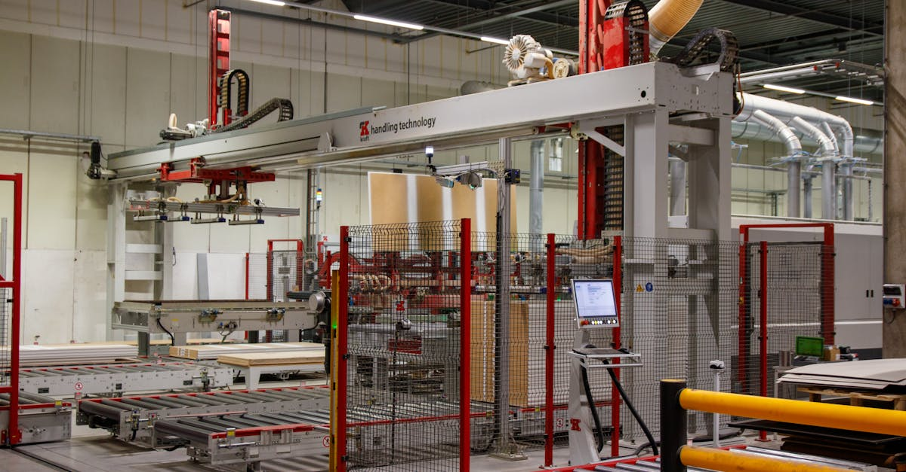

Musk et Intel : une alliance historique qui secoue l'industrie des semiconducteurs
Ce 13 avril 2026, Bloomberg a levé le voile sur l'une des alliances les plus ambitieuses de la décennie technologique : Elon Musk a officiellement choisi Intel comme partenaire industriel pour son projet Terafab, une méga-usine de fabrication de puces destinée à alimenter l'ensemble de son empire technologique. L'homme le plus riche du monde constitue une équipe dédiée à cette opération pharaonique qui pourrait redessiner la carte mondiale des semiconducteurs.
Cette annonce survient dans un contexte explosif pour Intel. Le géant de Santa Clara vient d'enregistrer un rally boursier historique de 100 milliards de dollars en avril 2026, devenant l'action la plus performante du S&P 500 sur huit séances consécutives. Les investisseurs, analystes et gouvernements observent ce rapprochement avec une attention particulière, car il touche à des enjeux qui dépassent le cadre industriel : souveraineté technologique, compétition avec la Chine, et avenir de l'intelligence artificielle.
Le projet Terafab : anatomie d'une ambition sans précédent
Terafab n'est pas un simple projet d'usine. C'est une vision intégrée de souveraineté technologique portée par Elon Musk, qui ambitionne de contrôler l'ensemble de la chaîne de valeur de ses entreprises, de la conception des puces à leur fabrication. Le nom même — « Tera » — évoque l'échelle colossale envisagée : une capacité de production se chiffrant en milliers de wafers par mois, avec des investissements estimés entre 30 et 50 milliards de dollars sur la prochaine décennie.
Pourquoi Musk a besoin de ses propres puces
L'urgence de Terafab se comprend en examinant les besoins cumulés de l'empire Musk :
- xAI et Grok — La startup d'intelligence artificielle de Musk nécessite des centaines de milliers d'accélérateurs GPU pour entraîner et déployer Grok, son modèle de langage. En 2025, xAI a déjà déployé un cluster de 100 000 GPU H100 à Memphis, Tennessee, mais la prochaine génération exigera des puces personnalisées, optimisées pour l'architecture spécifique de Grok. Le coût d'achat de GPU NVIDIA à cette échelle dépasse les 10 milliards de dollars par cycle d'entraînement.
- Tesla et le Full Self-Driving (FSD) — Chaque véhicule Tesla embarque le processeur HW4 pour la conduite autonome, et le supercalculateur Dojo nécessite des puces d'entraînement dédiées. Avec une production annuelle dépassant les 2 millions de véhicules, Tesla consomme des millions de puces par an. Le passage au HW5, prévu pour 2027, exigera une gravure plus fine et des performances accrues.
- SpaceX et Starlink — La constellation Starlink compte plus de 7 000 satellites en orbite, chacun embarquant des processeurs de communication et de traitement du signal. Le projet Starshield, volet militaire, impose des exigences supplémentaires en termes de sécurité des puces.
- Neuralink — Les interfaces cerveau-machine de Neuralink requièrent des circuits intégrés ultra-miniaturisés, biocompatibles, avec une consommation énergétique minimale. Ces puces sur mesure ne peuvent être produites que par des fonderies maîtrisant les processus les plus avancés.
En cumulant ces besoins, Musk représente l'un des plus gros consommateurs de semiconducteurs avancés au monde. Sa dépendance à TSMC et Samsung pour la fabrication constitue un risque stratégique majeur qu'il entend résoudre avec Terafab.
L'échelle industrielle visée
Selon Bloomberg, Terafab vise une capacité initiale de 20 000 wafers par mois en processus avancés (sub-3nm), avec une montée en puissance vers 50 000 wafers mensuels d'ici 2032. À titre de comparaison, la Gigafab 18 de TSMC traite environ 100 000 wafers par mois. Terafab se positionnerait comme la deuxième plus grande fonderie avancée de la planète dès sa phase de maturité.
Pourquoi Intel : le choix stratégique décrypté
Le choix d'Intel comme partenaire n'est pas le fruit du hasard. Il résulte d'une convergence d'intérêts industriels, technologiques et politiques qui rend cette alliance quasi inévitable.
Intel Foundry Services : le pari de Pat Gelsinger porté par Lip-Bu Tan
Depuis 2021, Intel a amorcé une transformation radicale sous l'impulsion de Pat Gelsinger, poursuivie par le nouveau PDG Lip-Bu Tan. Intel Foundry Services (IFS) est le bras de fonderie d'Intel, conçu pour fabriquer des puces pour des clients tiers — exactement comme TSMC le fait pour Apple, NVIDIA ou AMD. Cette stratégie, initialement accueillie avec scepticisme par Wall Street, trouve sa validation avec le partenariat Terafab.
IFS offre à Musk ce qu'aucun autre fondeur américain ne peut proposer :
- Une infrastructure de fabrication sur sol américain, avec des usines en Arizona (Fab 52 et 62), en Ohio (deux méga-fabs en construction), et en Oregon
- Le processus Intel 18A (équivalent 1.8 nanomètre), qui a passé avec succès ses tests de qualification au premier trimestre 2026 et qui se positionne comme compétitif face au N2 de TSMC
- Des capacités de packaging avancé, notamment la technologie Foveros 3D et EMIB, essentielles pour assembler les chiplets complexes que Musk envisage pour ses accélérateurs IA
- 50 ans d'expertise en fabrication de semiconducteurs, avec une base de 15 000 ingénieurs process dédiés
Le CHIPS Act : l'argent public comme catalyseur
Le CHIPS and Science Act, promulgué en 2022, a alloué 52,7 milliards de dollars pour relancer la fabrication de semiconducteurs aux États-Unis. Intel est de loin le principal bénéficiaire, avec plus de 20 milliards de dollars en subventions directes et prêts garantis pour ses nouvelles usines. Cette manne publique réduit considérablement le coût du partenariat Terafab pour les deux parties.
Le gouvernement américain voit d'un bon oeil l'entrée de Musk : son implication garantit un client d'ancrage majeur pour IFS, accélérant le retour sur investissement des fonds publics. Des sources proches du Département du Commerce indiquent que l'administration considère Terafab comme un projet de sécurité nationale.

Le rally Intel : anatomie d'une envolée de 100 milliards de dollars
L'action Intel a connu en avril 2026 l'un des rallyes les plus spectaculaires de l'histoire des semiconducteurs. En l'espace de huit séances consécutives de hausse, le titre a ajouté plus de 100 milliards de dollars à sa capitalisation boursière, propulsant Intel au rang d'action la plus performante du S&P 500 sur la période.
Les chiffres clés du rally
- Capitalisation ajoutée : +100 milliards de dollars en 8 séances (passant d'environ 120 à 220 milliards)
- Performance du titre : +83% depuis le début du mois d'avril
- Volume d'échange : multiplié par 4,2 par rapport à la moyenne sur 30 jours, avec des pics à 180 millions d'actions échangées par jour
- Options : le ratio call/put a atteint 3,8 pour 1, signalant un optimisme extrême
- Short squeeze : 12% du flottant était vendu à découvert début avril — ces positions ont été massivement couvertes, amplifiant la hausse
Les catalyseurs identifiés
Plusieurs facteurs ont convergé pour déclencher et entretenir ce rally :
- L'annonce du partenariat Musk/Terafab — Le catalyseur principal, qui valide la stratégie IFS et garantit des revenus de fonderie massifs à long terme
- Qualification réussie du processus 18A — La preuve technique qu'Intel peut rivaliser avec TSMC sur les noeuds avancés, un jalon que beaucoup d'analystes ne croyaient pas atteignable avant 2027
- Nouveaux contrats de fonderie — Outre Musk, Intel aurait signé des lettres d'intention avec deux autres grands clients américains du secteur défense
- Relèvements d'analystes — Goldman Sachs est passé de « Neutre » à « Acheter » avec un objectif de cours relevé de 35 à 58 dollars. Bank of America et Morgan Stanley ont suivi avec des révisions similaires
- Flux institutionnels — Les ETF technologiques et les fonds souverains ont massivement renforcé leurs positions Intel, générant un cercle vertueux de hausse
Géopolitique des puces : pourquoi cette alliance est un acte de souveraineté
Le partenariat Musk-Intel ne peut se comprendre sans le prisme géopolitique. La fabrication de semiconducteurs est devenue le nerf de la guerre technologique mondiale, au même titre que le pétrole l'était au XXe siècle.
La dangereuse dépendance à TSMC et Taïwan
Aujourd'hui, plus de 90% des puces les plus avancées au monde (sub-7nm) sont fabriquées par un seul acteur, TSMC, sur une île de 36 000 km2 située à 180 kilomètres des côtes chinoises. Cette concentration géographique représente le risque systémique le plus grave de l'économie mondiale :
- Les exercices militaires chinois autour de Taïwan se sont intensifiés en 2025-2026, avec des simulations de blocus provoquant des alertes dans les chaînes d'approvisionnement
- Un conflit au détroit de Taïwan paralyserait la production de puces pour Apple, NVIDIA, AMD, Qualcomm et des centaines d'autres entreprises
- Le Pentagone estime qu'une interruption de trois mois causerait 1 500 milliards de dollars de pertes à l'économie mondiale
- Les stocks stratégiques de puces avancées ne couvrent en moyenne que 6 à 8 semaines de production
La stratégie de reshoring américain
Les États-Unis ont lancé un programme sans précédent de rapatriement de la fabrication de puces. Le CHIPS Act n'est que la partie visible : le gouvernement combine subventions directes, crédits d'impôt (25% via l'ITC), restrictions à l'exportation vers la Chine, et pression diplomatique sur les alliés.
Le partenariat Terafab s'inscrit dans cette stratégie. Musk apporte sa puissance médiatique et industrielle au service d'un objectif national : réduire la dépendance américaine à Taïwan. C'est aussi un signal que le gouvernement soutiendra durablement la fabrication domestique de semiconducteurs.
Le marché des puces IA : une explosion à 400 milliards de dollars
Au coeur de l'alliance Musk-Intel se trouve la demande insatiable en puces pour l'intelligence artificielle. Le marché mondial des accélérateurs IA — GPU, TPU, ASIC spécialisés — est en croissance exponentielle.
Les chiffres vertigineux de la demande
- Le marché des puces IA est estimé à 185 milliards de dollars en 2025, en croissance de 42% sur un an
- Les projections de Gartner et McKinsey convergent vers un marché de 400 milliards de dollars d'ici 2028
- Les dépenses en infrastructure IA des hyperscalers (Microsoft, Google, Amazon, Meta) ont dépassé 200 milliards de dollars cumulés en 2025
- xAI à elle seule prévoit de dépenser plus de 15 milliards de dollars en puces sur les trois prochaines années
Entraînement vs inférence : le basculement en cours
Un changement structurel majeur est en train de se produire dans la répartition des dépenses en puces IA. Historiquement, l'entraînement des modèles (training) captait la majorité des investissements. Mais en 2026, l'inférence — c'est-à-dire l'exécution des modèles en production — est en train de devenir le poste de dépense dominant :
- L'inférence représente désormais 60% des dépenses en puces IA, contre 40% pour l'entraînement
- Chaque requête à un modèle comme Grok, GPT ou Claude consomme de la puissance de calcul
- Avec des milliards d'utilisateurs quotidiens, les coûts d'inférence explosent de manière exponentielle
- Les puces optimisées pour l'inférence (plus petites, moins énergivores, plus rapides) deviennent le segment de croissance le plus rapide
C'est précisément ce basculement qui motive Musk à concevoir ses propres puces d'inférence via Terafab, plutôt que de dépendre des GPU généralistes de NVIDIA.

La compétition avec NVIDIA
NVIDIA domine actuellement le marché des puces IA avec plus de 80% de parts de marché sur les accélérateurs d'entraînement. Mais cette position est attaquée de toutes parts. Google conçoit ses TPU, Amazon ses Trainium et Inferentia, Microsoft ses Maia. Musk, avec Terafab, rejoint ce mouvement de désintégration verticale qui vise à réduire la dépendance au quasi-monopole de Jensen Huang. Si Musk produit des accélérateurs IA compétitifs en volume, NVIDIA pourrait voir ses marges brutes — supérieures à 75% — se comprimer à horizon 2029-2030.
L'intelligence artificielle au service de la conception de puces
L'ironie de la situation est que l'IA n'est pas seulement la raison pour laquelle Musk a besoin de puces — elle est aussi l'outil qui rend possible la conception de puces toujours plus complexes. L'industrie des semiconducteurs utilise massivement l'intelligence artificielle dans ses processus de conception et de fabrication.
Les outils EDA dopés à l'IA
Les outils de Electronic Design Automation (EDA), dominés par Synopsys et Cadence, intègrent désormais des modules d'IA avancés pour chaque étape de la conception :
- Placement et routage automatisés — Les algorithmes de reinforcement learning optimisent la disposition de milliards de transistors sur un die de quelques centimètres carrés, trouvant des configurations que les ingénieurs humains mettraient des mois à concevoir. Google a démontré que l'IA pouvait accomplir en quelques heures un travail de placement qui prenait des semaines.
- Vérification et validation — Les modèles de machine learning détectent les bugs de design, les violations de règles et les défauts potentiels avec une précision et une rapidité impossibles pour les méthodes traditionnelles. Le temps de vérification d'un design complexe est passé de plusieurs semaines à quelques jours.
- Simulation prédictive — L'IA modélise les performances thermiques, électriques et mécaniques des puces avant même la fabrication du premier prototype, réduisant drastiquement les cycles de développement et les coûts de prototypage.
Yield optimization : l'IA dans l'usine
Dans les fabs, l'IA maximise le rendement (yield) — le pourcentage de puces fonctionnelles par wafer :
- Des capteurs collectent des téraoctets de données par jour sur chaque étape de fabrication
- Les modèles de deep learning détectent les dérives de processus avant qu'elles ne produisent des défauts
- L'IA ajuste automatiquement les paramètres de gravure, dépôt et lithographie
- Chez Intel, l'IA a amélioré le yield du 18A de 15 points de pourcentage en six mois, un gain représentant des milliards de revenus supplémentaires
Pour Terafab, cette maîtrise est un avantage compétitif décisif. Musk pourra déployer les outils d'optimisation de xAI dans les fabs Intel, créant un cercle vertueux où l'IA conçoit et fabrique les puces qui alimenteront l'IA de demain.
Impact sur les investisseurs : gagnants et perdants de l'alliance Musk-Intel
Le partenariat Terafab redistribue les cartes pour les investisseurs dans le secteur des semiconducteurs et des technologies. Voici une analyse structurée des positions gagnantes et perdantes.
Les gagnants
- Intel (INTC) — Le bénéficiaire le plus évident. Le partenariat garantit des revenus de fonderie récurrents sur une décennie, valide la stratégie IFS, et attire d'autres clients potentiels. L'objectif de cours consensuel a été relevé de 40% en une semaine. Potentiel de re-rating vers un multiple de TSMC (25-30x les bénéfices estimés).
- ASML (ASML) — Le fabricant néerlandais de machines de lithographie EUV est le fournisseur incontournable de toute nouvelle fab avancée. Chaque machine EUV coûte entre 200 et 380 millions de dollars, et Terafab en nécessitera des dizaines. ASML a déjà un carnet de commandes record, mais Terafab pourrait ajouter 5 à 8 milliards de dollars de commandes supplémentaires.
- Applied Materials (AMAT), Lam Research (LRCX), KLA Corp (KLAC) — Les équipementiers de fabrication de semiconducteurs bénéficient de chaque dollar investi dans de nouvelles usines. Terafab représente un marché adressable de plusieurs milliards pour ces fournisseurs.
- Entreprises de l'écosystème IA — Plus de capacité de fabrication signifie plus de puces disponibles, accélérant le déploiement de l'IA et bénéficiant à l'ensemble de l'écosystème.
Les perdants potentiels
- TSMC (TSM) — Perd un client stratégique à terme. Le succès de Terafab validerait le modèle de fonderie américaine, encourageant d'autres clients à diversifier hors de Taïwan.
- Samsung Foundry — Déjà en difficulté face à TSMC, Samsung voit l'alliance Musk-Intel réduire son attractivité pour les clients américains.
- NVIDIA (NVDA) — Si Musk fabrique ses propres accélérateurs IA, la dépendance aux GPU NVIDIA diminuera. Avec xAI parmi les plus gros acheteurs de GPU au monde, l'impact pourrait être significatif d'ici 2028-2030.
Le cycle des semiconducteurs : ce que cela signifie pour la décennie
L'alliance Musk-Intel s'inscrit dans un super-cycle des semiconducteurs sans précédent. Contrairement aux cycles traditionnels de l'industrie (boom de 2-3 ans suivi d'une correction), le cycle actuel est alimenté par des forces structurelles durables :
- L'IA générative crée une demande en puissance de calcul qui double tous les 6 à 9 mois
- L'électrification des transports multiplie par 5 la quantité de semiconducteurs par véhicule
- La 5G et la connectivité IoT ajoutent des milliards de nouveaux appareils consommateurs de puces
- La course aux armements technologiques entre les États-Unis et la Chine pousse les deux blocs à investir massivement dans leurs capacités de fabrication
Dans ce contexte, les investissements dans la fabrication de puces ne sont pas cycliques — ils sont séculaires. Les entreprises et les nations qui ne construisent pas de capacité aujourd'hui seront dépendantes demain. Musk l'a compris plus tôt que la plupart de ses pairs, et c'est cette conviction qui anime le projet Terafab.
Pour les investisseurs, cela signifie que le secteur des semiconducteurs mérite une allocation structurellement plus élevée dans les portefeuilles. Les équipementiers offrent une exposition à la tendance de fond, tandis qu'Intel, avec le catalyseur Terafab, présente un profil risque-rendement asymétrique attirant de plus en plus de capitaux institutionnels.
Conclusion : Terafab, un tournant pour l'industrie et pour les investisseurs
L'alliance entre Elon Musk et Intel pour le projet Terafab transcende le simple accord industriel. C'est un acte fondateur qui cristallise trois mégatendances du XXIe siècle : l'explosion de la demande en puces IA, le rapatriement de la fabrication stratégique aux États-Unis, et la verticalisation des empires technologiques.
Pour Intel, c'est la validation ultime d'une stratégie de fonderie que beaucoup jugeaient irréaliste il y a encore deux ans. Le rally de 100 milliards de dollars en bourse n'est peut-être que le début si l'exécution est au rendez-vous. La qualification du processus 18A et l'arrivée de Musk comme client d'ancrage transforment Intel d'un fabricant de PC en déclin en un pilier de l'infrastructure IA américaine.
Pour Musk, Terafab est la pièce manquante du puzzle. Après avoir verticalisé batteries (Gigafactory), fusées (Starbase) et véhicules électriques, il s'attaque au composant le plus critique : le silicium. Si Terafab tient ses promesses, Musk disposera d'un avantage que ni OpenAI, ni Google, ni Meta ne pourront reproduire.
Pour les investisseurs, le message est clair : nous entrons dans une ère de réindustrialisation des semiconducteurs qui générera des opportunités considérables. Les entreprises maîtrisant conception, fabrication et intelligence artificielle détiendront les clés de la prochaine révolution technologique. L'alliance Musk-Intel est le signal que cette révolution a commencé.